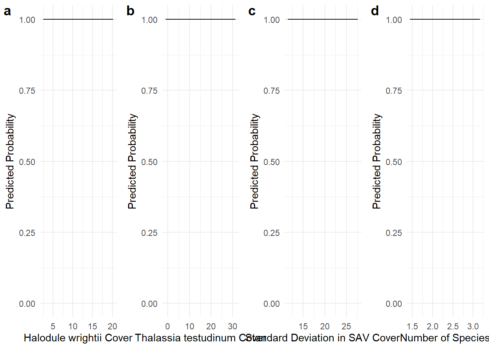

library(glmmTMB) # for fitting GLMMs
library(cowplot) # for plotting multiple panels together via plot_grid function
library(ggeffects) # for extracting the marginal effects of each covariate in the model
library(MuMIn) # for AIC
library(performance) # for R2
library(terra) #raster
library(tidyverse)
library(raster)
library(sf)
library(data.table)
##
## Attaching package: 'data.table'
## The following object is masked from 'package:raster':
##
## shift
## The following objects are masked from 'package:lubridate':
##
## hour, isoweek, mday, minute, month, quarter, second, wday, week,
## yday, year
## The following objects are masked from 'package:dplyr':
##
## between, first, last
## The following object is masked from 'package:purrr':
##
## transpose
## The following object is masked from 'package:terra':
##
## shift
# Ensure the dataset has the proper format with predictors and the response variable (RealDets)
datextract <- readRDS('data/datextract.RDS')
alldat <- readRDS('data/alldat.RDS')
# As before, assemble our dataset remove NAs
datglmm <- cbind(datextract, alldat) %>% drop_na() %>% mutate(RealDets = as.factor(RealDets), Transmitter = as.factor(Transmitter))RSF with GLMM
RSFs with GLMM
This vignette usesGLMMs to calculate Resource Selection Functions. This section uses the same setup as the first tab, so we will just start with brining in that data
Prepare data
Since we just put together all the data, we will prepare the training and testing data. Again, a 70/30 split
# Derive the training and testing dataset
set.seed(19)
# Add a unique ID column to each row
datglmm <- datglmm %>%
mutate(ID = seq_len(nrow(datglmm)))
# Split the data: 70% training, 30% testing
RSF_ar.train <- datglmm %>%
group_by(Transmitter) %>%
sample_frac(0.7) %>%
ungroup() %>%
as.data.frame()
RSF_ar.test <- anti_join(datglmm, RSF_ar.train, by = "ID")
table(RSF_ar.train$Transmitter)
##
## A69-1602-37380 A69-1602-37771 A69-1602-37773 A69-1602-37774 A69-1602-37778
## 636 84 246 214 310
## A69-1602-37779 A69-1602-37783 A69-1602-37787 A69-1602-37788 A69-1602-37790
## 280 117 202 78 471
## A69-1602-37798
## 127
table(RSF_ar.test$Transmitter)
##
## A69-1602-37380 A69-1602-37771 A69-1602-37773 A69-1602-37774 A69-1602-37778
## 272 36 105 91 133
## A69-1602-37779 A69-1602-37783 A69-1602-37787 A69-1602-37788 A69-1602-37790
## 120 50 86 33 202
## A69-1602-37798
## 55Fitting and summarizing the model
GLMMs are a lot more flexible in terms of the model terms that can be used. Therefore, we can put random effects such as individuals into the model. Furthermore, we can use polynomials if needed.
We choose to go for the polynomial model in the following code because of a lower AICc score
# Fit a GLMM with glmmTMB
glmmTMB_model_lin <- glmmTMB(RealDets ~ hw2020 + tt2020 + cov2020 + num2020 + sdcov2020 + (1 | Transmitter),
data = RSF_ar.train, family = binomial)
glmmTMB_model_poly <- glmmTMB(RealDets ~ hw2020 + tt2020 + poly(cov2020,2) + num2020 + sdcov2020 +(1 | Transmitter),
data = RSF_ar.train, family = binomial)
AICc(glmmTMB_model_lin, glmmTMB_model_poly)
## df AICc
## glmmTMB_model_lin 7 3359.324
## glmmTMB_model_poly 8 3177.352
glmmTMB_model = glmmTMB_model_poly
# Summarize the model results
summary(glmmTMB_model)
## Family: binomial ( logit )
## Formula:
## RealDets ~ hw2020 + tt2020 + poly(cov2020, 2) + num2020 + sdcov2020 +
## (1 | Transmitter)
## Data: RSF_ar.train
##
## AIC BIC logLik deviance df.resid
## 3177.3 3224.7 -1580.6 3161.3 2757
##
## Random effects:
##
## Conditional model:
## Groups Name Variance Std.Dev.
## Transmitter (Intercept) 0.06858 0.2619
## Number of obs: 2765, groups: Transmitter, 11
##
## Conditional model:
## Estimate Std. Error z value Pr(>|z|)
## (Intercept) -6.13545 0.64936 -9.448 < 2e-16 ***
## hw2020 -0.06355 0.02304 -2.758 0.00581 **
## tt2020 -0.01097 0.01389 -0.790 0.42948
## poly(cov2020, 2)1 -40.60981 3.32620 -12.209 < 2e-16 ***
## poly(cov2020, 2)2 34.02053 2.60794 13.045 < 2e-16 ***
## num2020 -0.03780 0.15760 -0.240 0.81044
## sdcov2020 0.36540 0.02050 17.828 < 2e-16 ***
## ---
## Signif. codes: 0 '***' 0.001 '**' 0.01 '*' 0.05 '.' 0.1 ' ' 1
r2(glmmTMB_model)
## # R2 for Mixed Models
##
## Conditional R2: 0.323
## Marginal R2: 0.309
# Marginal R2 focuses on the explanatory power of the fixed effects alone.
# Conditional R2 considers both fixed effects and random effects. Only slightly improves variance explained.Model accuracy
Let’s look at the model accuracy. You will see it is a lot lower than the RF model
RSF_ar.train <- readRDS('data/RSF_train.rds')
RSF_ar.test <- readRDS('data/RSF_test.rds')
# Accuracy of the model on the training data
RSF_ar.train$predicted_probs_glmm <- predict(glmmTMB_model, newdata = RSF_ar.train, type = "response")
RSF_ar.train$predicted_class_glmm <- ifelse(RSF_ar.train$predicted_probs_glmm > 0.5, 1, 0)
train_conf_matrix <- table(RSF_ar.train$RealDets, RSF_ar.train$predicted_class_glmm)
train_conf_matrix
##
## 0 1
## 0 889 510
## 1 493 871
# Accuracy of the model on the test data
RSF_ar.test$predicted_probs_glmm <- predict(glmmTMB_model, newdata = RSF_ar.test, type = "response")
RSF_ar.test$predicted_class_glmm <- ifelse(RSF_ar.test$predicted_probs_glmm > 0.5, 1, 0)
test_conf_matrix <- table(RSF_ar.test$RealDets, RSF_ar.test$predicted_class_glmm)
test_conf_matrix
##
## 0 1
## 0 397 230
## 1 199 359
# Calculate accuracy metrics for both training and test datasets
(train_accuracy <- sum(diag(train_conf_matrix)) / sum(train_conf_matrix))
## [1] 0.6369888
(test_accuracy <- sum(diag(test_conf_matrix)) / sum(test_conf_matrix))
## [1] 0.6379747Model Interpretation
Let’s get into model interpretation! Similar steps to RF
# Calculate marginal effects for hw, tt
effects_hw2020 <- ggpredict(glmmTMB_model, terms = "hw2020 [all]")
effects_tt2020 <- ggpredict(glmmTMB_model, terms = "tt2020 [all]")
effects_sdcov2020 <- ggpredict(glmmTMB_model, terms = "sdcov2020 [all]")
effects_num2020 <- ggpredict(glmmTMB_model, terms = "num2020 [all]")
# Plot marginal effects for each covariate
hh_marg <- ggplot(effects_hw2020, aes(x = x, y = predicted)) +
geom_line() +
geom_ribbon(aes(ymin = conf.low, ymax = conf.high), alpha = 0.2) +
scale_y_continuous(limits = c(0, 1)) +
labs(x = "Halodule wrightii Cover", y = "Predicted Probability") +
theme_minimal()
tt_marg <- ggplot(effects_tt2020, aes(x = x, y = predicted)) +
geom_line() +
geom_ribbon(aes(ymin = conf.low, ymax = conf.high), alpha = 0.2) +
scale_y_continuous(limits = c(0, 1)) +
labs(x = "Thalassia testudinum Cover", y = "Predicted Probability") +
theme_minimal()
sdcov_marg <- ggplot(effects_sdcov2020, aes(x = x, y = predicted)) +
geom_line() +
geom_ribbon(aes(ymin = conf.low, ymax = conf.high), alpha = 0.2) +
scale_y_continuous(limits = c(0, 1)) +
labs(x = "Standard Deviation in SAV Cover", y = "Predicted Probability") +
theme_minimal()
num_marg <- ggplot(effects_num2020, aes(x = x, y = predicted)) +
geom_line() +
geom_ribbon(aes(ymin = conf.low, ymax = conf.high), alpha = 0.2) +
scale_y_continuous(limits = c(0, 1)) +
labs(x = "Number of Species", y = "Predicted Probability") +
theme_minimal()
# Combine the 4 plots into one using cowplot
cowplot::plot_grid(hh_marg, tt_marg, sdcov_marg, num_marg, labels = "auto", ncol = 4)
#now onto prediction mapping!
cov_2020 <- rast('data/cov2020.tif') #percent SAV cover
sdcov_2020 <- rast('data/sdcov2020.tif') #standard deviation of cover
numsp_2020 <- rast('data/num2020.tif') #number of SAV species
hw_2020 <- rast('data/hw2020.tif') #Halodule wrightii cover
tt_2020 <- rast('data/tt2020.tif')
extent <- st_read('data/trainr2021_mask.shp')
## Reading layer `trainr2021_mask' from data source
## `C:\Users\jonro\OneDrive\Desktop\RSF_OTN_Workshop\RSF_OTN_Workshop\data\trainr2021_mask.shp'
## using driver `ESRI Shapefile'
## Simple feature collection with 1 feature and 1 field
## Geometry type: POLYGON
## Dimension: XY
## Bounding box: xmin: 518189.1 ymin: 2776305 xmax: 521241.5 ymax: 2780157
## Projected CRS: NAD83 / UTM zone 17N
cov2020 <- terra::crop(cov_2020, extent)
sdcov2020 <- terra::crop(sdcov_2020, extent)
num2020 <- terra::crop(numsp_2020, extent)
hw2020 <- terra::crop(hw_2020, extent)
tt2020 <- terra::crop(tt_2020, extent)
rastdat <- c(cov2020, sdcov2020, num2020, hw2020, tt2020)
rastdat <- terra::project(rastdat, 'epsg:2958')
# Predict onto the spatial grid for GLMM (similar to Random Forest)
newdata <- as.data.table(as.data.frame(rastdat)) %>%
mutate(Transmitter = "place-holder") # have to include the column of Transmitter, even though we will ignore it in predictions.
# Predict probabilities of presence for the grid, excluding random effects
newdata$predicted_probs_glmm <- predict(glmmTMB_model, newdata = newdata, type = "response",
re.form = NA) # Ignore random effects.
## Warning in checkTerms(data.tmb1$terms, data.tmb0$terms): Predicting new random effect levels for terms: 1 | Transmitter
## Disable this warning with 'allow.new.levels=TRUE'
# Map the predicted probabilities
new_raster <- rast(ext(rastdat), resolution = res(rastdat), crs = crs(rastdat))
new_raster[] <- newdata$predicted_probs_glmm
# Plot the predicted probabilities
plot(new_raster, main = "GLMM Predicted Probabilities of Presence")
# Convert rasters to data frames
df_glmm <- as.data.frame(new_raster, xy = TRUE)
colnames(df_glmm)[3] <- "GLMM_Prob"
# Create the GLMM plot
(glmm_plot <- ggplot(df_glmm, aes(x = x, y = y, fill = GLMM_Prob)) +
geom_tile() +
scale_fill_viridis_c(limits = c(0, 1), name = "Probability") +
coord_equal() +
labs(title = "GLMM Predicted Probabilities of Presence") +
theme_minimal())Congrats, you have used GLMMs now as well!